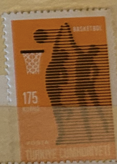
| SOURCE | TITLE| IMAGE MATCH | click to source page |
| eBay | mae91 Mexico 1968 XIX Olympic Games sc#C337 MNH volleyball | eBay | 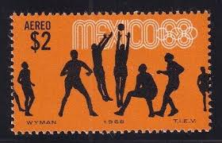 |
| nubapet.com | Vintage Airline Playing Cards Lot of 4, 2 Sealed USAir & Delta Air Lines | 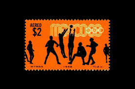 |
| Smithsonian Institution | Olympics | National Postal Museum | 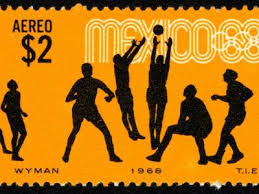 |
| Todocolección | so) mexico, lot of used el salto de agua stamps - Buy Antique stamps of Mexico on todocoleccion | 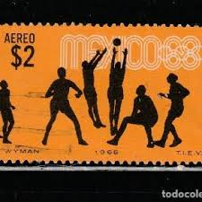 |
| eBay | 1974 1975 NBA Schedule | eBay | 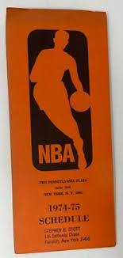 |
| british-stamps.com | British Stamps | Browse Stamps | PHQ Cards Collection | 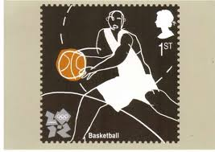 |
| eBay | 1998-99 Upper Deck MJ Sticker Collection Red Back Michael Jordan #SU36 | eBay | 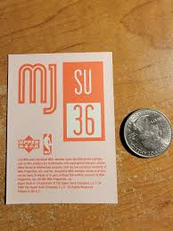 |
| eBay | Las mejores ofertas en Estampillas postales temáticas Individual Amarillo | eBay | 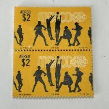 |
| eBay | 1964 URUGUAY LATIN AMERICA OLYMPICS SPORT ATHLETICS $1.50 VF MNH | eBay | 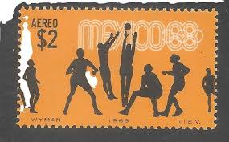 |
| eBay | Mexico Water Sports Olympics Postal Stamps for sale | eBay | 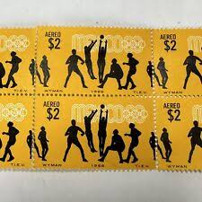 |
| Designspiration | image inspiration on Designspiration | 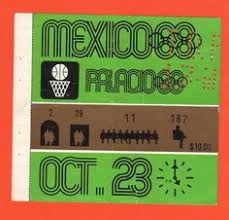 |
| the-philatelist.com | Mexico 1968, putting a modern face forward for the modern Olympics – The-Philatelist | 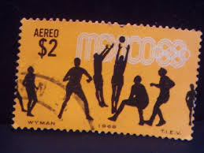 |
| Alamy | MEXICO - CIRCA 1968: a stamp printed in the Mexico shows Volleyball, 19th Olympic Games, Mexico City 68, circa 1968 Stock Photo - Alamy | 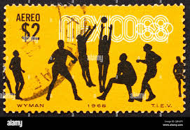 |
| Wikipedia | Jonas Burba - Wikipedia | 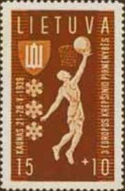 |
| YouTube | Selos antigos 43a Parte América - YouTube | 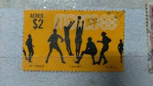 |
| Trading Card Database | 2005-06 Topps 1952 Style - All-Time Fan Favorites Autographs Basketball - Gallery | Trading Card Database | 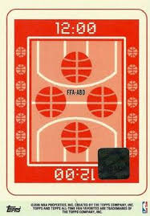 |
| HipStamp | Poland 1159 Basketball 1963 | Europe - Poland, General Issue Stamp / HipStamp | 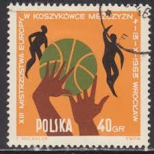 |
| Numista | Medal - Sporting Pictograms (Sydney 2000 Olympics; Basketball) - Australia – Numista | 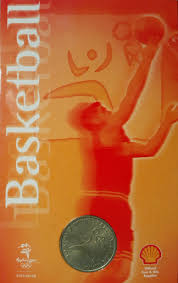 |
| lastdodo.com | Olympic Games 50 (1968) - Mexico - LastDodo | 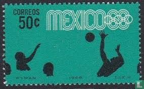 |
| allnumis.com | Mihaita Savin Gallery of Stamps | 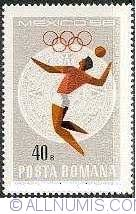 |
| HipStamp | Mexico #C337 Airmail Used | Central & South America - Mexico, Air Mail Stamp / HipStamp | 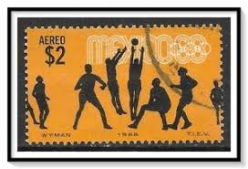 |
| eBay | Volleyball Russian & Soviet Union Stamps for sale | eBay | 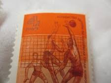 |
| eBay | Used Romanian Olympics Postal Stamps for sale | eBay | 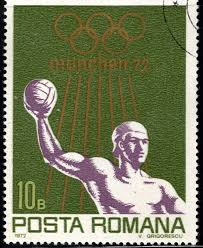 |
| Pre-War Cards | 1939 FIBA EuroBasket Stamps (Lithuania) Set and Checklist - Pre-War Cards | 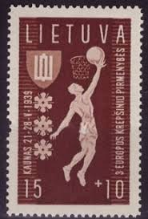 |
| Alamy | Summer olympic games 1968 mexico city hi-res stock photography and images - Alamy | 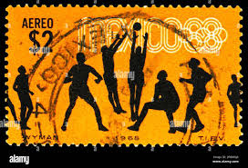 |
| lastdodo.com | Tadeusz Michaluk [1938] Stamp catalogue - LastDodo | 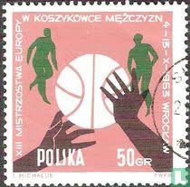 |
| Shutterstock | Grenada Circa 1976 Stamp Printed Grenada Stock fotografie 131842706 | Shutterstock | 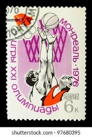 |
| Concert Poster Wall | 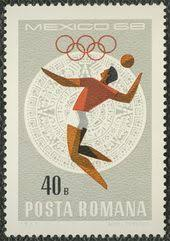 | |
| eBay | 1995-96 Fleer NBA Jam Session Pop-Ups Tall Insert Mark Price #23 | eBay | 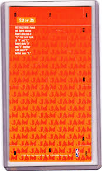 |
| Getty Images | Postage stamp commemorating the Olympic Games in Montreal depicting... News Photo - Getty Images | 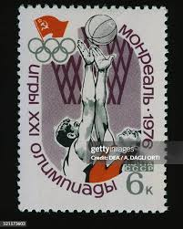 |
| Dreamstime.com | Postage Stamp Soviet Union, CCCP, 1979, Summer Olympic Games 1980, Moscow Editorial Photography - Image of collectible, designer: 197156602 | 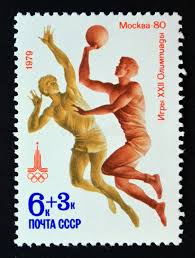 |
| Wikimedia.org | File:ROM 1968 MiNr2699 pm B002.jpg - Wikimedia Commons | 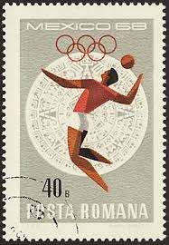 |
| eBay UK | German Olympics German & Colonies Postage Stamps for sale | eBay UK | 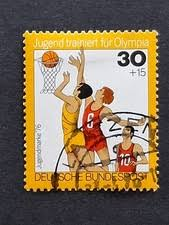 |
| PICRYL | Olympic sprinters Owens Metcalfe and Wykoff 1936 - PICRYL - Public Domain Media Search Engine Public Domain Search | 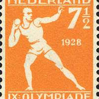 |
| Stamp Digest | Independent India's First Olympics Hockey Gold -12 Aug 1948 – Stamp Digest | 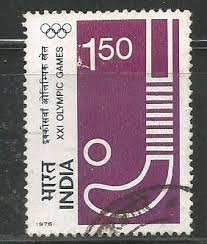 |
| Wisconsin Federation of Stamp Clubs | GREEN BAY PHILATELIC SOCIETY 1002 Amberly Trail Green Bay WI 54311 | 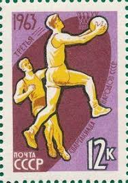 |
| eBay | Vintage 1969 2 Russian Stamps Volleyball | eBay | 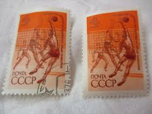 |
| Amazon.com | Amazon.com: Berlin (West) 732-733 (Complete.Issue) unmounted Mint/Never hinged ** MNH 1985 Sports Aid (Stamps for Collectors) Ball Games Without Football (baskfirst Day sheetall/Handball/Baseball …) : 玩具和遊戲 | 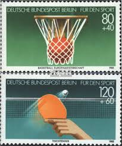 |
| THAILEX | THAILEX - Thailand Travel Encyclopedia | 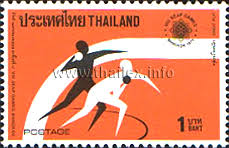 |
| eBay | Congo #C231 EPL Proof Discus throw [YTPA232][Faulty] | eBay | 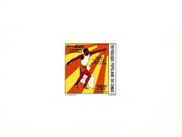 |
| eBay | F-EX36871 GERMANY BERLIN MNH 1985 SPORT GAMES TENNIS BASKETBALL. | eBay | 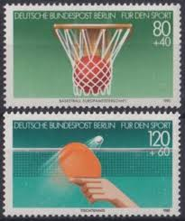 |
| Discount Covers | Australia Covers | 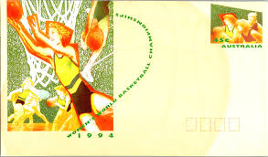 |
| eBay | GREAT BRITAIN STAMP MNH [SALE] [Choose 10pc of MINT is $3.5] unused WM1743 | eBay | 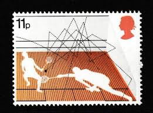 |
| eBay | Individual Cabo Verdean Stamps for sale | eBay | 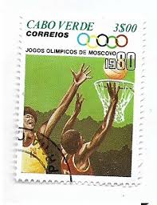 |
| HipStamp | Israel #443 Basketball MNH Single | Middle East - Israel, General Issue Stamp / HipStamp | 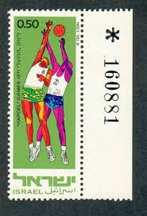 |
| eBay UK | Olympics Used Polish Stamps for sale | eBay UK | 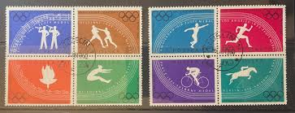 |
| Wikipedia | 1965 World Table Tennis Championships - Wikipedia | 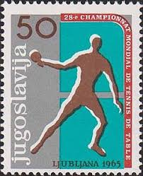 |
| eBay | 1992 Ballstreet Magic Johnson USA Olympics HOF | eBay | 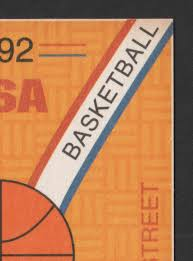 |
| Dreamstime.com | 1969 Events Stock Photos - Free & Royalty-Free Stock Photos from Dreamstime | 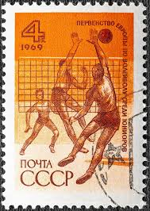 |
| HipStamp | Rwanda MNH 1972 Olympics - Munchen | Africa - Rwanda, Stamp / HipStamp | |
| Shutterstock | 116+ Thousand Retro Ussr Royalty-Free Images, Stock Photos & Pictures | Shutterstock |  |
| Shutterstock | Basketball Stamps: Over 826 Royalty-Free Licensable Stock Photos | Shutterstock | |
| Dreamstime.com | Olympic Womens Basketball Stock Photos - Free & Royalty-Free Stock Photos from Dreamstime | |
| Alamy | Soviet union soviet basketball player hi-res stock photography and images - Alamy | |
| eBay | ROMANIA 1976 STAMPS SPORT HANDBALL ERROR BROKEN R USED POST | eBay | |
| eBay | Germany-Berlin Sports 1985 MNH-6,50 Euro | eBay | |
| eBay | Cancelled to Order/CTO Basketball European Stamps for sale | eBay | |
| eBay | 1188] BERLIN 1985, Carimbo do dia, Goma original, Sports | eBay | |
| Shutterstock | Basketball Stamp: Over 826 Royalty-Free Licensable Stock Photos | Shutterstock | |
| Shutterstock | Contest Post: Over 2,574 Royalty-Free Licensable Stock Photos | Shutterstock |
{kind=link}